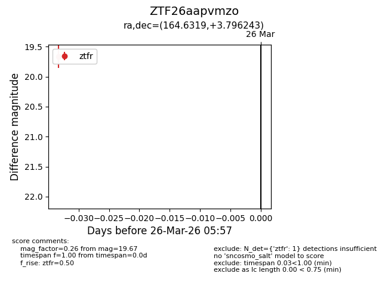
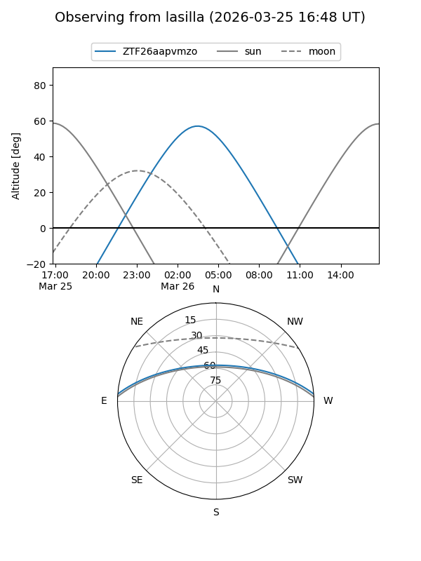
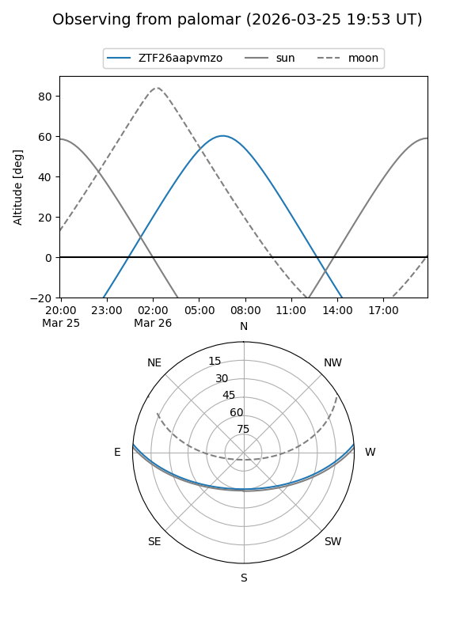

ZTF26aapvmzo
Target ZTF26aapvmzo at 2026-03-26 05:59
Aliases and brokers:
FINK: link
Lasair: link
ALeRCE: link
alt names
ZTF26aapvmzo (ztf,fink_ztf)
Coordinates:
equatorial (ra, dec) = 164.6319,+3.79624
equatorial (HMS+DMS) = 10:58:31.66,+03:47:46.47
galactic (l, b) = (248.8578,+54.35238)
Flags:
Photometry:
last ztfr=19.67
1 ztfr detections
Lightcurve

Visibility


Additional plots